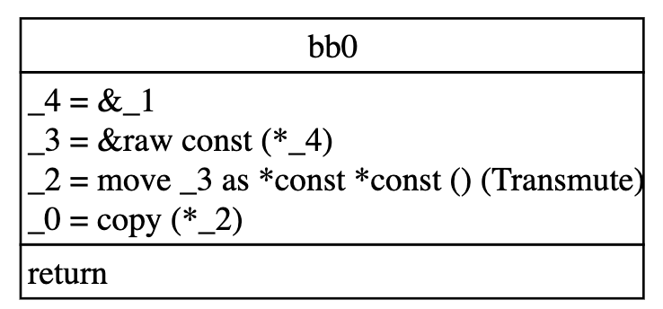
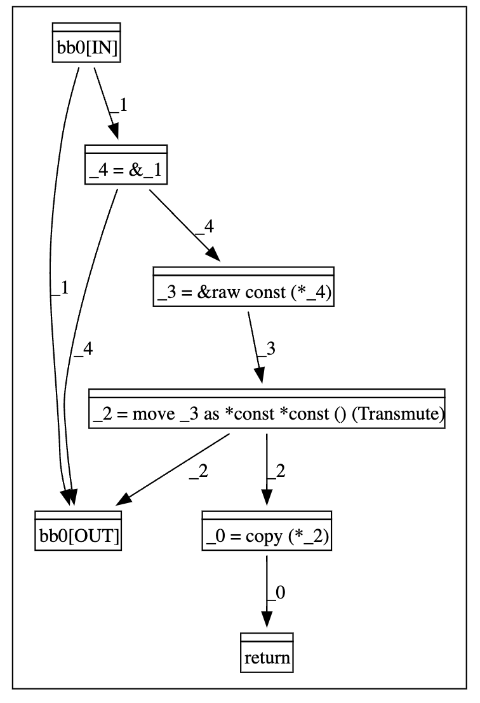

rpl::dump_mir: A Gadget for MIR Dumping
To effectively model a code pattern, it is often necessary to first inspect the MIR of the target function. RPL provides the #[rpl::dump_mir] procedural macro to simplify this process. This macro instructs the customized compiler to output the MIR of a target function, providing clear intermediate artifacts that can be used to model/define a new RPL pattern.
Usage
Using the macro involves a simple two-step process.
(1) Annotate the Target Function: First, apply the #[rpl::dump_mir] attribute directly to the function whose MIR you wish to inspect. The macro accepts optional arguments, such as dump_cfg and dump_ddg, to also generate graph visualizations.
#![allow(unused)] fn main() { use std::mem; #[rpl::dump_mir(dump_cfg, dump_ddg)] pub unsafe fn get_data<T: ?Sized>(val: *const T) -> *const () { unsafe { *mem::transmute::<*const *const T, *const *const ()>(&val) } } }
(2) Run the RPL Linter: Next, run cargo rpl from your project's root directory. For this debugging macro to work, the RPL_PATS environment variable must be set, but it can point to an empty directory if you are only dumping MIR.
RPL_PATS=/path/to/any/pattern/dir cargo rpl
Output
The macro produces output in two places: directly in the console and in a new directory in your project root.
Console Output
The compiler will print the formatted MIR and other diagnostic information directly to your terminal. This includes a breakdown of the function's local variables and the statements within each basic block.
note: MIR of `get_data`
--> src/main.rs:4:1
|
3 | #[rpl::dump_mir(dump_cfg, dump_ddg)]
| ------------------------------------ MIR dumped because of this attribute
...
note: bb0: {
_4 = &_1; // scope[0]
_3 = &raw const (*_4); // scope[0]
_2 = move _3 as *const *const () (Transmute); // scope[0]
_0 = copy (*_2); // scope[0]
return; // scope[0]
}
...
error: abort due to debugging
--> src/main.rs:3:1
|
3 | #[rpl::dump_mir(dump_cfg, dump_ddg)]
| ^^^^^^^^^^^^^^^^^^^^^^^^^^^^^^^^^^^^ help: remove this attribute
Note that the process intentionally ends with an error: abort due to debugging. This is a feature designed to remind you to remove the debugging attribute before committing your code.
Generated Artifacts
The macro will also create a mir_dump directory in your project root containing several files. These artifacts provide a more detailed and persistent record of the function's structure.
mir_dump/
├── rust_playground.get_data.-------.dump_mir..mir
├── rust_playground.get_data.-------.dump_mir..mir.cfg.dot
└── rust_playground.get_data.-------.dump_mir..mir.ddg.dot
-
.mirfile: The raw, textual representation of the function's MIR. -
.cfg.dotfile: A representation of the Control-Flow Graph (CFG) in DOT format, which can be visualized with tools like Graphviz. -
.ddg.dotfile: A representation of the Data-Dependence Graph (DDG) in DOT format.
The following image shows the CFG and DDG of the get_data function.


Modeling a RPL Pattern from MIR
The primary use of the dumped MIR is to serve as a template for a new RPL pattern. The process involves "hollowing out" the concrete MIR by replacing its specific local variables with abstract metavariables.
For example, consider the dumped MIR above:
#![allow(unused)] fn main() { // Dumped MIR from console bb0: { _4: &*const T = &_1; _3: *const *const T = &raw const (*_4); _2: *const *const () = move _3 as *const *const () (Transmute); _0: *const () = copy (*_2); return; } }
Converting the raw MIR dump into a functional RPL pattern is a systematic process. The key steps are to add the necessary syntactic structure and then abstract the logic with metavariables.
- Add
letbindings: Convert each raw MIR assignment (e.g.,_4 = &_1;) into a fullletstatement. - Annotate types: Use the list of locals provided in the MIR dump to add explicit type annotations for each local variable.
- Abstract the pattern with metavariables. This is where you "hollow out" the concrete MIR to make it a general template. You replace the specific, compiler-generated names for locals and types with descriptive, abstract metavariables (prefixed with
$). For example, the concrete local_1of type*const Tbecomes the abstract statementlet $ptr: *const $T = _;. By applying this process to all statements, you transform the specific MIR dump into a reusable pattern.
#![allow(unused)] fn main() { let $ptr: *const $T = _; // _1 let $ref_to_ptr: &*const $T = &$ptr; // _4 let $ptr_to_ptr_t: *const *const $T = &raw const (*$ref_to_ptr); // _3 let $ptr_to_ptr: *const *const () = move $ptr_to_ptr_t as *const *const () (Transmute); // _2 let $data_ptr: *const () = copy (*$ptr_to_ptr); // _0 }